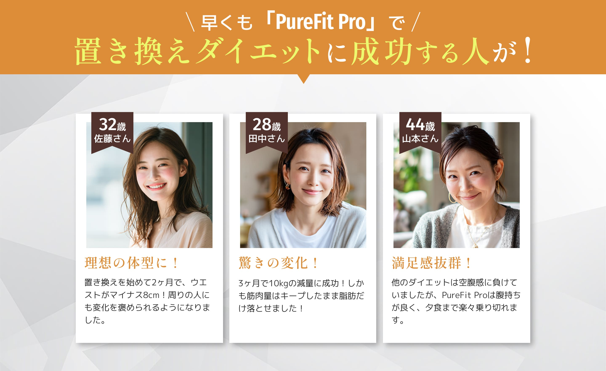
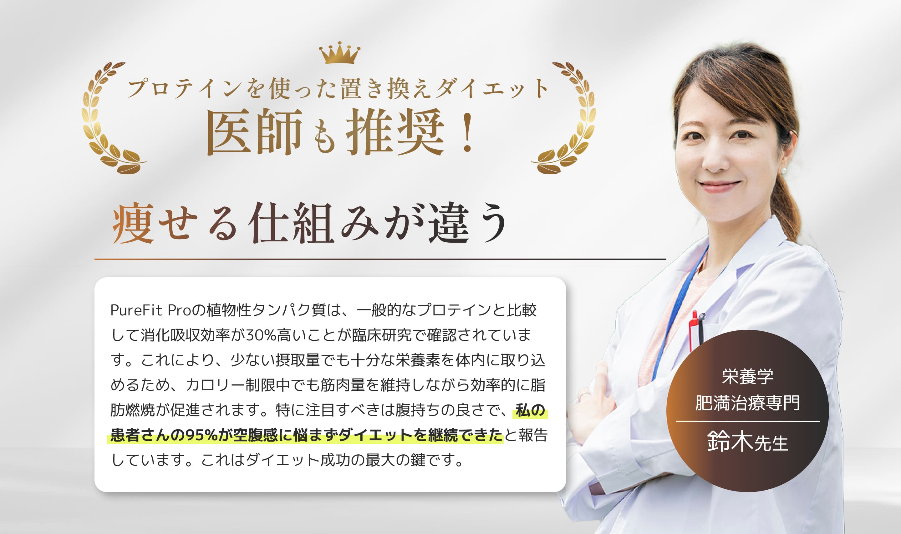
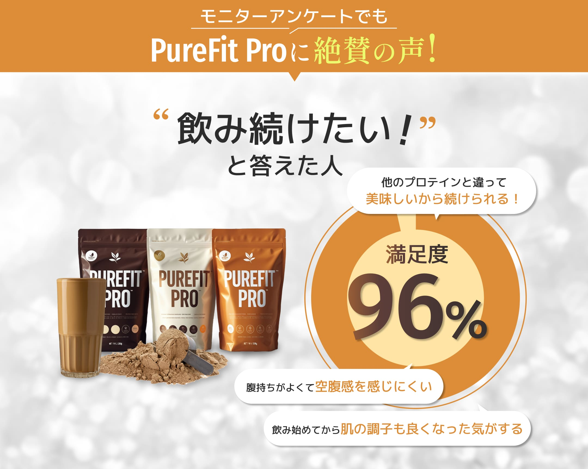
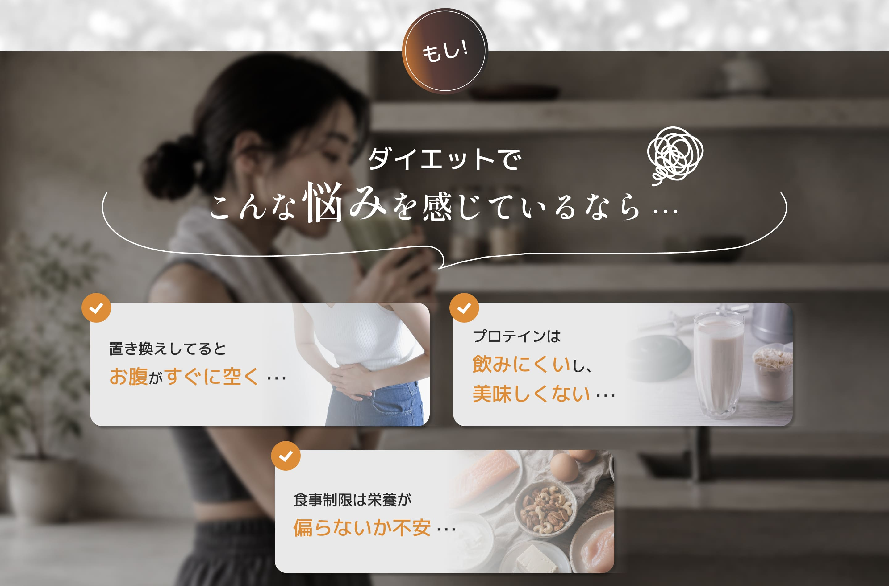
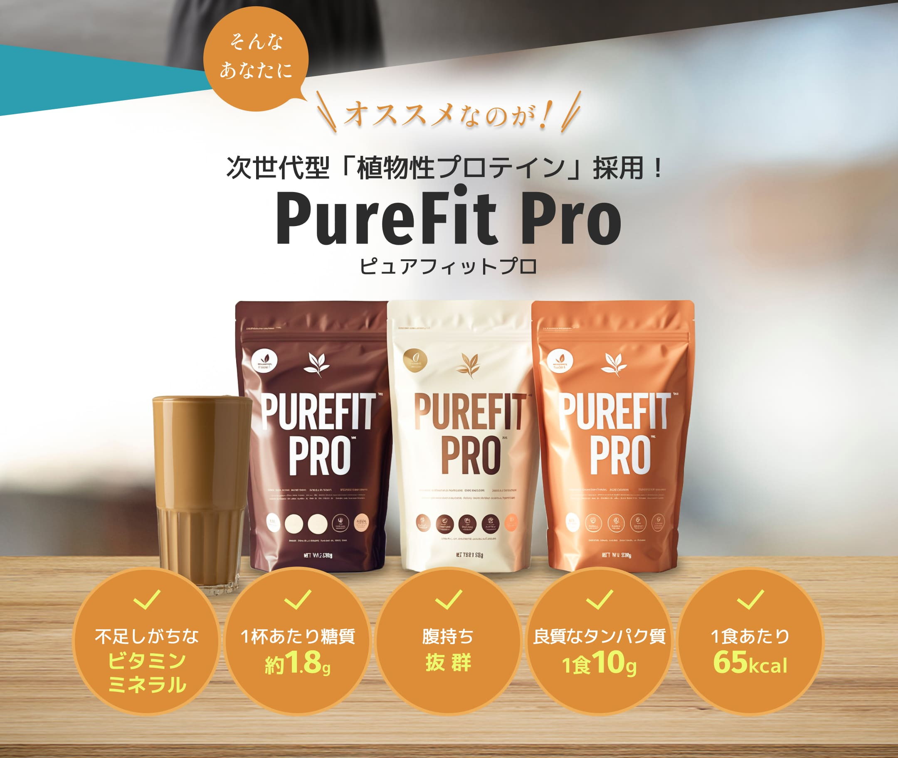
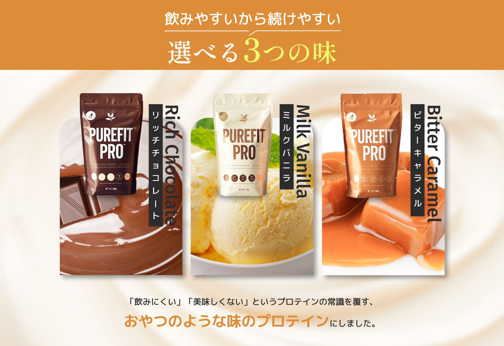
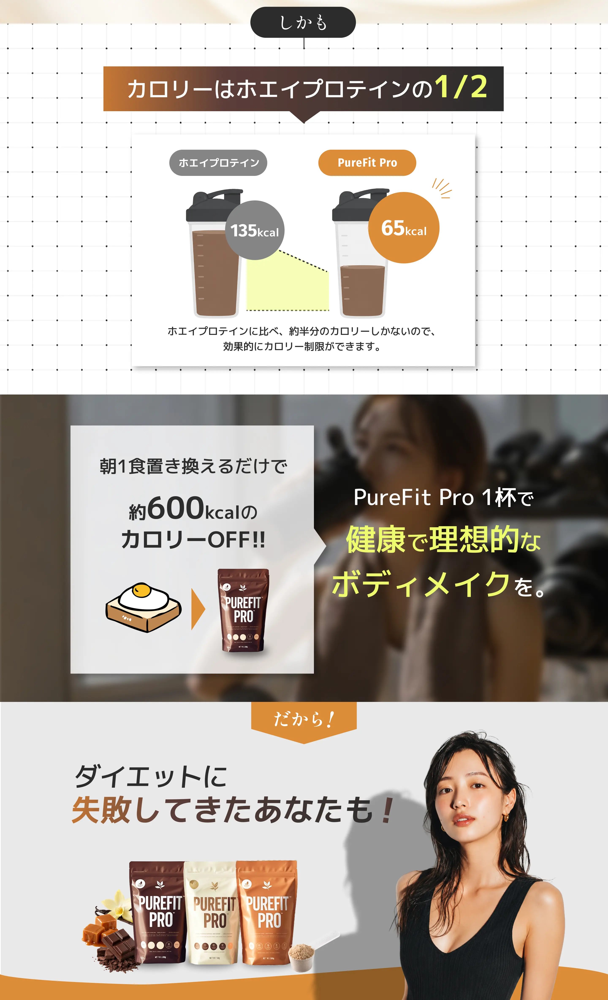
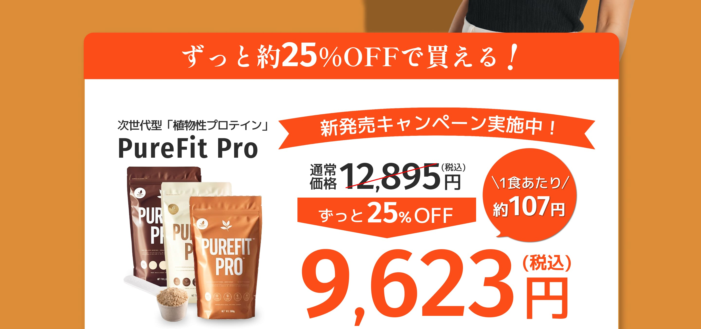
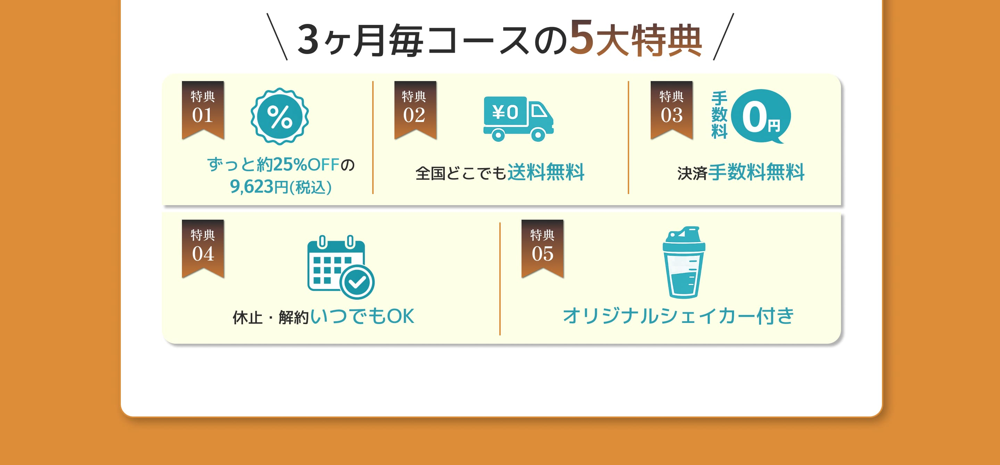

-
Q.01
開く
いつ飲めば良いですか？ -
朝食の置き換えとして飲むのが最も効果的です。朝食をPureFit Proに置き換えることで、1日のカロリー摂取量を効率的に減らしながら、必要な栄養素をしっかり補給できます。
-
Q.02
開く
毎日飲んだ方が良いですか？ -
テキストテキストテキストテキストテキストテキストテキストテキストテキストテキストテキストテキストテキストテキストテキストテキストテキストテキストテキストテキストテキストテキストテキストテキストテキストテキスト
-
Q.03
開く
妊娠中、授乳中に飲んでも平気ですか？ -
テキストテキストテキストテキストテキストテキストテキストテキストテキストテキストテキストテキストテキストテキストテキストテキストテキストテキストテキストテキストテキストテキストテキストテキストテキストテキスト
-
Q.04
開く
解約はいつでもできますか？ -
テキストテキストテキストテキストテキストテキストテキストテキストテキストテキストテキストテキストテキストテキストテキストテキストテキストテキストテキストテキストテキストテキストテキストテキストテキストテキスト